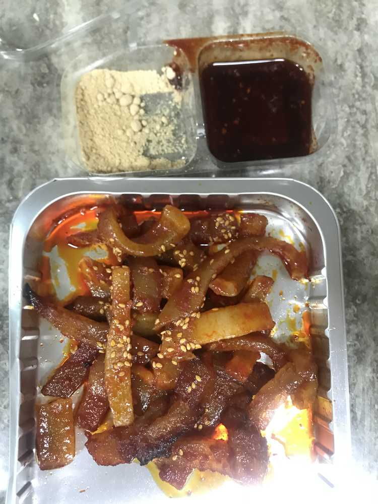

어제 편의점을 갔는데
돼지껍데기가 있는거예요!!
심지어 콩가루도 같이 들어있어서
너무 신기했어요!! 바로 샀습니당~~~~~
그리구 오늘 아침에
꺼내서 먹었어요~~~~~~~짜잔!!
속 아플까봐 바나나랑 요거트랑 망고스무디+펄 로 조금
속을 감싸주고 ㅋㅋㅋㅋㅋㅋㅋㅋㅋㅋㅋ먹고 나서
조금 매워서 달달한 홍루이X 샌드위치로 중화시켯다는...
전설의 아침식사네요 뭐 아침이잖아요?ㅋㅋㅋㅋㅋㅋㅋ
어제는 병원에 잠깐 갔다가
그토록 먹고 싶었던 썰어져있는 수박을 먹었습니다!!!
전 요즘 행복합니다 ㅎㅎㅎㅎㅎㅎㅎ♥️
오늘 돼지껍데기 같은 하루 보내용
